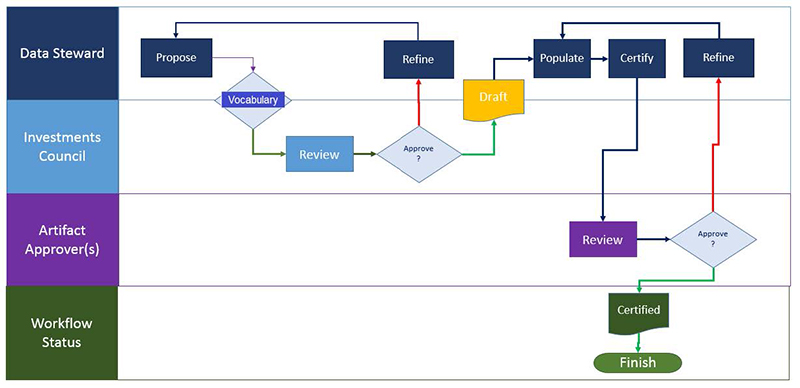

A workflow in Infogix Data3Sixty is a set of steps that can be applied to an artifact to control how the item is managed within the business glossary. When you are working with existing artifacts, or proposing new artifacts to be added to the glossary, you will need to follow the workflow steps set out by your organization's governance program.
Tip: This topic provides an understanding of workflows for end users. If you are an Administrator and want to set up a new workflow, see Establishing workflows.
In Infogix Data3Sixty, there are three common types of workflow:
| Workflow type | Description |
|---|---|
|
Proposal workflow |
The proposal of a new artifact defined within the glossary.
|
| Certification workflow |
The certification that an artifact within the glossary meets the governance criteria set out by your organization, for example, verifying expected metadata or levels of ownership on a selected artifact.
|
| Issue workflow | This is a separate type of workflow that allows you to raise issues, tag them to specific artifacts and route them to the responsible people for action. |
The following diagram shows a conceptual view of both the proposal and the certification workflows:

[TO DO: How does a user propose a workflow change?]
To see a list of workflows on the system, click the Monitor button on the left of the screen to open the Workflow Monitor page:
Selecting a workflow from the Workflows panel will display the corresponding flowchart on the right of the page. You can select specific steps of the flowchart to view more information.
Below the Workflows panel, you will see a My Assignments panel showing a list of tasks assigned to you.
You can access the Workflows panel and see a list of assignments for a specific artifact, for example a Business Term, by clicking the Workflow Monitor button on the right of the screen:

TODO
Cover how a supervisor with Data Stewards working for them would track outstanding tasks for their team